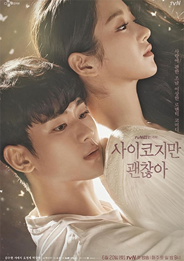

Bem-vindo(a) ao Mundo das Dorameiras!
prepare-se para embarcar em jornadas emocionantes, repletas de romance, drama, comédia e mistério. As séries asiáticas, produções que conquistaram o coração de milhões, oferecem histórias cativantes e personagens inesquecíveis. Nesta página, vamos explorar alguns dos títulos que se tornaram favoritos e discutir por que eles são tão amados.
Confira Agora
-

1. Tudo Bem Não Ser Normal
Moon Gang-tae, um cuidador que vive exclusivamente para seu irmão mais velho, Moon Sang-tae, um talentoso ilustrador autista. Sua vida é uma rotina de sacrifícios e mudanças constantes, sempre fugindo de um passado doloroso. E Ko Moon-young, uma renomada e excêntrica autora de livros infantis, cuja beleza estonteante esconde um transtorno de personalidade antissocial e um passado igualmente sombrio. Ela vê o mundo de forma cínica e distante, sem compreender as emoções alheias. O que acontece quando seus caminhos se cruzam de forma inesperada e a arte se mistura com a vida para curar feridas profundas? Prepare-se para uma jornada emocionante e visualmente deslumbrante sobre saúde mental, trauma, aceitação e a força transformadora do amor. Em "Tudo Bem Não Ser Normal", Gang-tae e Moon-young são forçados a confrontar seus traumas mais profundos e a desvendar os mistérios de seus passados interligados. Através de ilustrações poéticas, metáforas tocantes e uma química inegável, eles descobrirão que a verdadeira cura reside na capacidade de se abrir para o outro, de aceitar suas imperfeições e de encontrar beleza naquilo que é "não-normal".
-

2. Desgraça ao Seu Dispor
Tak Dong-kyung, uma editora de webtoons cuja vida é uma sucessão de infortúnios. Ao descobrir que tem apenas 100 dias de vida devido a uma doença terminal, e cansada de sua existência desgraçada, ela faz um desejo impulsivo para que o mundo inteiro desapareça. Ele, Myul Mang (que literalmente significa "Desgraça" ou "Ruína"), é uma divindade enigmática, a personificação da própria desgraça, cuja existência é um ciclo eterno de sofrimento para a humanidade. O que acontece quando seus caminhos se cruzam e ele, atraído pelo desejo dela, oferece um contrato que pode tanto salvá-la quanto condenar o mundo? Prepare-se para uma jornada fascinante e agridoce sobre vida, morte, destino, sacrifício e a busca pelo verdadeiro significado da existência. Em "Desgraça ao Seu Dispor", Dong-kyung e Myul Mang se veem presos em um dilema cósmico, onde cada escolha tem consequências profundas.
-

3. Pousando no Amor
Yoon Se-ri, uma magnata sul-coreana, herdeira de um conglomerado e dona de sua própria marca de sucesso. Sua vida é um redemoinho de negócios, moda e luxo, enquanto ele, Ri Jeong-hyeok, um capitão do exército norte-coreano, um homem íntegro, disciplinado e de princípios inabaláveis. Seu mundo é regido por regras estritas e lealdade ao seu país. O que acontece quando, em um acidente de parapente, uma reviravolta do destino a faz "pousar" inesperadamente na Coreia do Norte, direto nos braços (e na vida) dele? Prepare-se para um romance épico, hilário e emocionante que desafia fronteiras e ideologias. Em "Pousando no Amor", Se-ri e Jeong-hyeok são forçados a conviver em segredo, enquanto ele tenta de todas as formas protegê-la e encontrar um caminho seguro para que ela retorne à Coreia do Sul. Entre perigos, diferenças culturais e o risco constante de serem descobertos, eles descobrirão que o amor pode florescer nos lugares mais improváveis, provando que o coração não conhece divisões políticas.
-

4. Pretendente Surpresa
Shin Ha-ri, uma pesquisadora de alimentos otimista e trabalhadora, que vive uma vida comum e discreta. Ele, Kang Tae-moo, o CEO de uma empresa de tecnologia de ponta, brilhante, workaholic e absurdamente atraente, mas com uma aversão a relacionamentos. O que acontece quando Ha-ri aceita o pedido de sua melhor amiga, Jin Young-seo, para substituí-la em um encontro às cegas, com o objetivo de espantar o pretendente? Acontece que o pretendente é ninguém menos que Kang Tae-moo, o CEO de sua própria empresa! E, para piorar, ele está determinado a se casar para escapar das pressões familiares. Prepare-se para uma comédia romântica vibrante, cheia de mal-entendidos hilários e um romance de escritório secreto. Em "Pretendente Surpresa", Ha-ri se vê presa em um emaranhado de mentiras e identidades falsas, enquanto Tae-moo, sem saber a verdadeira identidade dela, se apaixona pela mulher que ele pensa ser sua noiva arranjada. Entre situações embaraçosas e uma química inegável, eles descobrirão que o amor pode surgir dos acordos mais inusitados, transformando uma farsa em um conto de fadas moderno.
-

5. Quando o telefone toca
Seo Hyun-joo, uma jovem mulher que vive em 2019, lidando com o luto e a busca por um novo começo após um evento traumático e Oh Young-sook, uma mulher que vive em 1999, presa em uma realidade sombria e perigosa. O que acontece quando um telefone sem fio antigo, abandonado em uma casa isolada, se torna uma ponte inesperada entre duas épocas distintas? Prepare-se para um thriller de suspense e mistério que desafia o tempo e o destino. Em "Quando o Telefone Toca" (também conhecida como "The Call"), Hyun-joo e Young-sook começam a se comunicar através desse telefone misterioso, desvendando segredos e alterando eventos do passado com consequências aterrorizantes no presente. A princípio, essa conexão parece uma chance de mudar o passado para um futuro melhor, mas logo se revela um jogo perigoso com o tempo, onde cada mudança desencadeia uma nova e mais sombria realidade. Uma corrida contra o relógio se inicia, enquanto elas tentam desvendar os mistérios do telefone e do passado antes que seja tarde demais.
Visão Geral das Séries
| Nome da Série | Ano Lanç. | Gênero | Plataforma | Episódios |
|---|---|---|---|---|
| Tudo Bem Não Ser Normal | 2020 | Drama, Romance, Psicológico | Netflix | 16 |
| Desgraça ao Seu Dispor | 2021 | Fantasia, Romance, Drama | Netflix | 16 |
| Pousando no Amor | 2019-2020 | Romance, Drama, Comédia | Netflix | 16 |
| Pretendente Surpresa | 2022 | Comédia Romântica | Netflix | 12 |
| Quando o Telefone Toca | 2024 | Drama, Romance, Melodrama | Netflix | 12 |